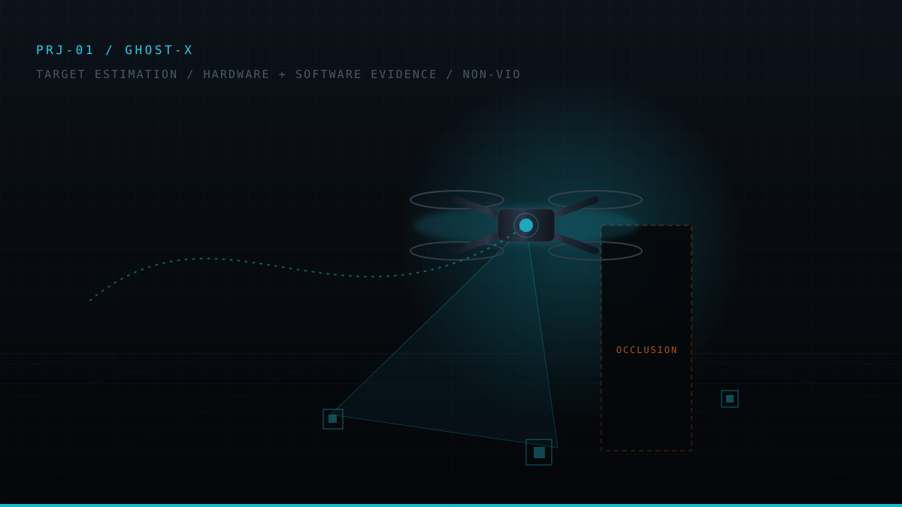

PRJ-01

Active development2026 to PRESENT
GHOST: GPS-Denied Occlusion-Survivable Tracker
Dual-filter visual-inertial estimation on embedded Linux
Overview
A vehicle that loses GNSS still has to know where it is, and where a manoeuvring target is, through seconds-long visual occlusions, on Raspberry Pi-class compute. GHOST separates those two problems into two filters that fail independently.
Current state
Software layer complete and committed: ESKF, IMM tracker, NIS consistency validation and CI. Hardware bring-up is blocked on an IMX296 driver/kernel issue on Ubuntu 22.04 / documented openly rather than hidden.
9
ESKF states
200 Hz
IMU propagate
30 Hz
Vision update
20
Flaws found & fixed
C++PythonESKFIMM / CTRVPX4 SITLMAVLinkRaspberry Pi 4B